The following paper
has been reproduced in full with permission from Answers In Genesis Ministries.
Contents navigation added by WorldWideFlood. Original article is available at
http://www.answersingenesis.org/home/area/Magazines/tj/docs/v8n1_ArkSafety.asp
Safety Investigation of Noah’s Ark
in a Seaway
by S.W. Hong, S.S. Na, B.S. Hyun, S.Y. Hong, D.S. Gong,
K.J. Kang, S.H. Suh, K.H. Lee, and Y.G. Je
First published in: Creation Ex Nihilo Technical Journal 8(1):26–35, 1994.
In this study, the safety of Noah’s Ark in the severe environments imposed by waves and winds during the Genesis Flood was investigated. Three major safety parameters — structural safety, overturning stability, and seakeeping quality — were evaluated altogether to assess the safety of the whole system.
The concept of ‘relative safety’, which is defined as the relative superiority in safety compared to other hull forms, was introduced and 12 different hull forms with the same displacement were generated for this purpose. Evaluation of these three safety parameters was performed using analytical tools. Model tests using 1/50 scaled models of a prototype were performed for three typical hull forms in order to validate the theoretical analysis.
Total safety index, defined as the weighted average of three relative safety performances, showed that the Ark had a superior level of safety in high winds and waves compared with the other hull forms studied. The voyage limit of the Ark, estimated on the basis of modern passenger ships, criteria, revealed that it could have navigated through waves higher than 30 metres.
There has been continuing debate over the occurrence of the Genesis Flood and the existence of Noah’s Ark in human history. Even though many scientific researches on the occurrence of the Flood itself have been made by geologists and anthropologists, limited information is known about Noah’s Ark, and conclusive physical evidence about the remains of the Ark has not been discovered, despite many searches this century of sites such as the Ice Cave and Anderson sites. While little is known about the hull form and the structure of the Ark, the size and the material of the Ark given in the Bible1 themselves are enough to warrant the attention of naval architects and so enable investigations of the practicality of the Ark as a drifting ship in high winds and waves.
In this study, the safety of the Ark in the severe environments imposed by the waves and winds during the Genesis Flood was investigated.
In general, the safety of a ship in a seaway is related to three major safety parameters — structural safety, overturning stability, and seakeeping quality. Good structural safety ensures the hull against damage caused mainly by wave loads. Enough overturning stability is required to prevent the ship from capsizing due to the heeling moment caused by winds and waves. Good seakeeping quality is essential for the effectiveness and safety of the personnel and cargo on board.
Information about the hull is of course available from the existing references to Noah’s Ark, and from the reasonable (common sense) assumptions of naval engineers. In order to avoid any error due to the lack of complete hull information, we introduced the concept of ’relative safety’, which was defined as the relative superiority in safety compared to other hull forms. For this purpose, 12 different hull forms with the same displacement were generated systemically by varying principal dimensions of the Ark. The concept of relative safety of a ship has been introduced by several researchers, such as Comstock and Keane,2 Hosoka et al.,3 Bales4 and Hong et al.,5 to analyze the seakeeping quality. In this paper, we extend the relative safety concept for the seakeeping quality to the concept of total safety, including structural and overturning safety.
An index for structural safety was obtained by assessing the required thickness of the midship for each hull form to endure the vertical bending moment imposed by waves. An index for overturning stability was obtained by assessing the restoring moment of the ship up to the flooding angle. An index for seakeeping quality was obtained by assessing six degrees of freedom of ship motions and related accelerations due to wave motion. Finally the total safety index was defined as a weighted average of the three indices.
Ship motions and wave loads for the analysis were predicted by using a strip method developed by Salvesen, Tuck and Faltinsen.6 Model tests using 1/50 scaled models of a prototype were performed for three typical hull forms in the Korea Research Institute of Ships and Engineering’s (KRISO’s) large towing tank, with a wave generating system in order to validate the theoretical analysis.
3. HULL FORM AND ITS CHARACTERISTICS Contents
3.1 Principle dimension
According to the Bible (Genesis 6:15), the length of the Ark was 300 cubits, the breadth of it was 50 cubits, and the height of it was 30 cubits. A cubit is known to be the distance between a man’s elbow and finger-tip. To decide the actual size of the Ark, a cubit had to be defined in terms of a modern unit. Scott7 collected the existing data about cubits around the Middle East area, and we adopted the common cubit (1 cubit = 17.5 inches) to approximate the size of the Ark. In modern units, the Ark was approximately 135m long, 22.5m wide and 13.5m high.
Little is known about the shape and form of the Ark’s hull. However, several explorers have each claimed that they have discovered the remains of the Ark at some sites on Mt. Ararat.8 Based on their arguments and references,9 we estimated the form of the Ark’s hull as that of a barge-type ship. In Figure 1, the shape of the Ark provided by KACR (Korea Association of Creation Research) is depicted, but it is slightly modified in the bilge radius, the dead rise, and the camber of the upper deck for the present investigation.
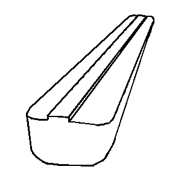 |
| Figure 1. View of the proposed hull form of the Ark. |
3.3 Draft and center of gravity Contents
The draft of a ship, that is, the height of submergence, determines the displaced volume of the ship and the cargo capacity; No special mention about the draft is found in the Bible, but Genesis 7:20 reads, 'The water prevailed 15 cubits higher; and the mountains were covered', which implies that the draft could be assumed to have been half the depth of the Ark (30 cubits). With this assumed draft, the displaced tonnage of the Ark would have been
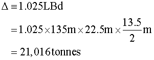
where the density of the water displaced is taken to be that of sea water, namely, 1.025 (tonnes per cubic metre).
The centre of gravity was the most important parameter that determined the safety of the ship. The longitudinal centre of gravity was taken quite naturally to be located at the midship. The vertical centre of gravity KG was determined by the way we distributed the cargo weight. Two possible loading distributions were considered. The first case assumed the cargo was loaded equally over three decks, and the second case assumed the cargo was loaded according to the ratio of 2:2:1 from the lowest deck upwards. The cargo weight was determined by subtracting the lightweight from the displaced tonnage. The lightweight, the weight of the bare hull, was estimated under the assumption that the longitudinal strength members took 70% of the deadweight, and the thickness of them all was 30 cm. Assuming the specific gravity of the wood was 0.6 (tonnes per cubic metre) gave a lightweight (bare hull weight) estimate of about 4,000 tonnes, and the cargo weight then became 17,016 tonnes.
For each loading case, the vertical centre of gravity KG was estimated by calculating the mass centre. Thus we found that KG1 = 4.93 m for the first case, and KG2 = 4.21 m for the second case. By assuming the actual loading condition was in between these two cases, KG was decided to have been

The mass moments of inertia played an important role in determining rotational motions. They were determined according to the weight distribution. Since there was no specific information about them, we adopted the widely used approximation for conventional ships.
3.4 Comparative hull forms Contents
In order to apply the relative safety concept, 12 different hull forms of barge-type were generated by varying principal dimensions while keeping the displaced volume constant. Table 1 lists the principal dimensions of the comparative hull forms.
| Ship No. | Length (L) | Beam (B) | Depth (D) |
| 0 (Ark) | Lo = 135m | Bo = 22.5m | Do = 13.5m |
| 1 | Lo | Bo/1.5 | 1.5Do |
| 2 | Lo | Bo/1.2 | 1.2Do |
| 3 | Lo | 1.2Bo | Do/1.2 |
| 4 | Lo | 1.5Bo | Do/1.5 |
| 5 | Lo/1.5 | Bo | 1.5Do |
| 6 | Lo/1.2 | Bo | 1.2Do |
| 7 | 1.2Lo | Bo | Do/1.2 |
| 8 | 1.5Lo | Bo | Do/1.5 |
| 9 | Lo/1.5 | 1.5Bo | Do |
| 10 | Lo/1.2 | 1.2Bo | Do |
| 11 | 1.2Lo | Bo/1.2 | Do |
| 12 | 1.5Lo | Bo/1.5 | Do |
| Table 1. Principal dimensions of comparative hull forms. | |||
4. SEAKEEPING PERFORMANCE Contents
4.1 Evaluation items and conditions
Behavior of a ship in a seaway depends mainly on the wave height, wave direction and ship speed. The Ark was supposed to have drifted at a very low speed, implying the effect of speed was negligible.
To evaluate the seakeeping performance, the related items should be selected based on the type of ship. Since the Ark had a barge-type hull form and the speed was nearly zero, the following seakeeping items were investigated:
| (1) | heave, |
| (2) | pitch, |
| (3) | roll, |
| (4) | vertical acceleration at FP (Forward Perpendicular, defined as the foremost location of the loading waterline near the bow), aVFP, |
| (5) | deckwetting frequency at FP, Nw, |
| (6) | slamming frequency at ST 3/20 (Station Number, defined as the normalized distance FP by ship length; here the location is 3/20 of the ship length away from FP), MVBM, |
| (7) | vertical acceleration at the bridge, aVBR, and |
| (8) | lateral acceleration at the bridge, aHBR. |
Here the bridge was assumed to be located at midship and D/4 above the waterline.
4.2 Method of evaluation Contents
A widely used strip method10 for ship motion analysis in regular waves was applied to evaluate the seakeeping items. The response in an irregular seaway was estimated by linearly superposing the regular wave response under the assumption that the wave and ship response follow Rayleigh’s distribution.
When a ship advances with constant speed and constant heading angle in regular waves, the ship motion can be estimated in the form of the response amplitude operator Rx(w) by a strip method which assumes small amplitude motion. Ship response in irregular waves for a given sea state is predicted by linearly superposing the regular wave response. The ship response energy spectrum in irregular waves Sxx(w) is estimated by
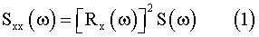
where S(w) is the wave energy spectrum.
By integrating Sxx(w) for all frequency components, we obtain the rms (root mean square) ship response in irregular waves.
In order to estimate the frequency of deckwetting and slamming, relative vertical motions at FP and at ST 3/20 need to be calculated from heave, pitch and roll responses
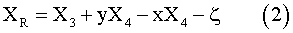
Here x, y are the longitudinal and transverse coordinates and X3, X4, X5 are the heave, roll and pitch displacements respectively. Following Ochi’s11 formula the number of deckwettings per hour Nw and that of the slammings per hour Ns. are given as
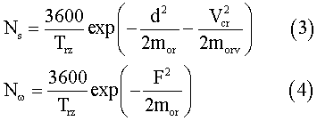
where Trz. is the zero-upcrossing period of relative vertical motion, F is the effective free-board at the deck, d is the effective draft, mor is the area of spectrum of relative vertical motion, morv is the area of spectrum of relative vertical velocity, and Vcr is the threshold velocity for slamming.
Responses for vertical and lateral accelerations (aV, aH) are calculated from the heave, roll, pitch and yaw responses, such that
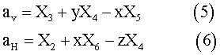
On the other hand, model tests were performed to confirm the reliability of the analytical calculation of the behaviour of ships in waves for three typical hull forms (#0, #10 and #12). Good agreement was obtained for all motions except roll motion, which usually showed strong nonlinear behaviour due to viscous damping. This discrepancy in roll motion would not have created serious problems, since in this research we put stress on the relative safety concept.
4.3 Seakeeping safety index Contents
The calculated ship responses in irregular seaways were arranged for each sea state (that is, wave height). For each evaluated item, a safety index was defined, such that it was 0 for the safest case and 1 for the most dangerous case, that is
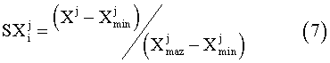
where
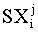
was the safety index for jth item of ship i. This safety index depended on the wave directions, as well as on the wave heights. Since the waves came from all directions with the same probability, we defined another safety index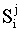
, which was given by taking the average of the safety indices for each wave direction.The total seakeeping safety index was defined then as the weighted average of eight safety indices as where Wj were the weighting factors for each item. In this case, we took Wj as 1/8, meaning that no weighting was considered.
In Table 2, the total seakeeping safety indices, together with each item’s index, are listed for the sea state with a wave height of 11 metres.
| Ship No. | Si(wave) | Heave | Roll | Pitch | aVFP | aVBR | aHBR | Nw | MVBM |
| 0 | 0.36 | 0.49 | 0.68 | 0.45 | 0.38 | 0.01 | 0.42 | 0.33 | 0.10 |
| 1 | 0.41 | 0.69 | 0.00 | 0.87 | 1.00 | 0.01 | 0.21 | 0.48 | 0.04 |
| 2 | 0.47 | 0.55 | 0.91 | 0.58 | 0.58 | 0.00 | 0.47 | 0.57 | 0.06 |
| 3 | 0.31 | 0.44 | 0.60 | 0.36 | 0.22 | 0.02 | 0.47 | 0.24 | 0.14 |
| 4 | 0.24 | 0.38 | 0.37 | 0.26 | 0.07 | 0.06 | 0.26 | 0.31 | 0.24 |
| 5 | 0.66 | 1.00 | 1.00 | 1.00 | 0.55 | 0.00 | 0.75 | 1.00 | 0.00 |
| 6 | 0.55 | 0.72 | 0.95 | 0.72 | 0.54 | 0.00 | 0.74 | 0.68 | 0.03 |
| 7 | 0.23 | 0.27 | 0.42 | 0.22 | 0.18 | 0.07 | 0.18 | 0.20 | 0.29 |
| 8 | 0.35 | 0.00 | 0.38 | 0.00 | 0.00 | 1.00 | 0.25 | 0.13 | 1.00 |
| 9 | 0.45 | 0.67 | 0.81 | 0.56 | 0.11 | 0.00 | 1.00 | 0.45 | 0.01 |
| 10 | 0.45 | 0.63 | 0.79 | 0.55 | 0.32 | 0.00 | 0.78 | 0.49 | 0.04 |
| 11 | 0.30 | 0.30 | 0.77 | 0.29 | 0.31 | 0.02 | 0.32 | 0.21 | 0.20 |
| 12 | 0.16 | 0.05 | 0.39 | 0.07 | 0.19 | 0.09 | 0.00 | 0.00 | 0.45 |
| Table 2. Seakeeping safety indices for a wave height H1/3 = 11 meteres (safest = 0, least safe = 1). See text for definitions of indices. Si(wave) is the total seekeeping safety index. | |||||||||
5.1 General
Since little information on the internal structures of the Ark are known, we made the following estimation from the viewpoint of modern shipbuilding technology, although we assume that the Ark was in fact built using relatively ancient technology.
At that time, trees might have grown taller than 10 metres, and their diameters may have been larger than 1 metre as a result of the presumed more favourable natural environment. A tree could have weighed about 5 tonnes. About 800 trees might thus have been required to build the Ark, if the wood weight of the Ark were about 4,000 tonnes.
The Ark may well have been constructed by joint structures of frames and plates. The frame structure of thick beams (50cm x 50cm) could have been installed in longitudinal, transverse and diagonal directions, and connected to each other at each end. The plate structure may have been attached to the frame structure to make the shell, deck and compartments using thick boards (30cm).
Taking into account these suggested details, structural designs only for the longitudinal members were carried out using the method of wave load analysis. Also, the suggested construction method was visualized with the aid of the pre-processor portion of the ANSYS programme. Finally, the structural safety index of the Ark was obtained by comparing the required wood volume for the 13 hull forms.
5.2 The structural design of longitudinal members Contents
The longitudinal members are usually designed in accordance with the classification rules (of the IACS) or by the wave load analysis method, which we have adopted in this paper. The thickness of the longitudinal members was thus calculated in accordance with the hull section modulus, which can be obtained as follows:
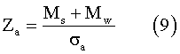
where Za is the hull sectional modulus, Mw is the wave bending moment, and sa is the allowable stress.
5.3 The structural analysis of the Ark Contents
The suggested construction method was visualized by using the ANSYS pre-processor (PREP7). The basic construction of the Ark was by use of frame and plate structures (see Figure 2). The frame structure was made longitudinal, the transverse and diagonal directions being fixed to each other. The plate structure was then attached to the frame structure.
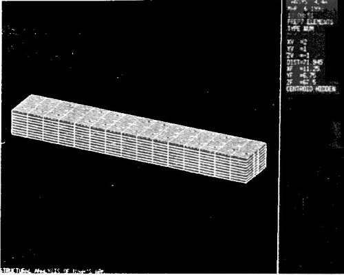 |
| Figure 2. The frame and plate structure of the Ark. |
The structural analysis of the Ark was carried out by using the ANSYS solver for the suggested structure. The frame structure was modelled to the truss elements and the plate structure was modelled to the membrane elements. The static load, the dynamic wave load and the cargo load were considered as the loading conditions.
The distribution of the equivalent stress obtained by the stress analysis is shown in Figure 3. Because the maximum stress was smaller than the allowable stress, the Ark could be said to have had safe structural performance.
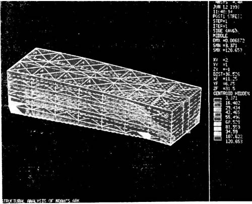 |
| Figure 3. The distribution of the equivalent stress of the Ark. |
5.4 Structural safety index Contents
The structural safety indices of the Ark were obtained by comparing the required wood volumes for the various hull forms. The structural safety index (SSI) was defined by normalizing the required wood volume, using the maximum and minimum required wood volume, using the maximum and minimum required wood volumes as follows:
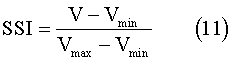
where V is the required wood volume for each hull form.
The structural indices for the severe condition (11 metre wave height and 180 entrance angle) are shown in Figure 4, which indicates that the structural safety indices were most sensitive to the variation of ship length and ship depth. The Ark’s index (OR) was small, so that it had high structural safety.
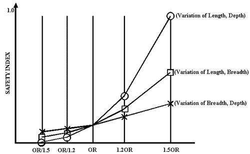 |
| Figure 4. Comparison of the structural safety indices for a wave height H1/3 = 11 metres (safest = 0, least safe = 1) |
6. OVERTURNING STABILITY Contents
6.1 Restoring arm
Overturning stability of a ship is determined by the ability of restoring it to its upright position against inclining moment induced by winds, waves and currents. Restoring moment occurs by the action of buoyancy. When a ship heels, the center of buoyancy B moves away from the centre-plane, and hence it creates restoring moment around the centre of gravity G.
The magnitude of this restoring moment is dependent on GZ, which is called the restoring arm. GZ is a function of the heel angle f, as well as ship geometry. This curve is called the restoring arm, which determines the overall overturning stability.
Since all hull forms in this study had a rectangular cross section, the GZ curve could be determined analytically by examining the movement of B as a function of the heel angle f as follows:
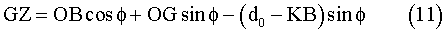
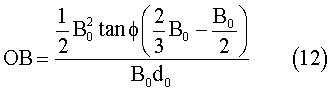
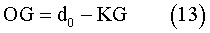
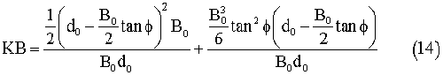
Here KB is the height of B, d0, is the draft, and B0 is the beam.
6.2 Overturning stability index Contents
The relative safety in overturning moment can be determined by comparing the ability of absorbing overturning energy, which is defined as the area under the restoring arm curve, from zero heel angle to its limiting angle over which flooding occurs into the vessel. In this research, we defined the limiting heel angle flim as the heeling angle when the corner of the roof was flooded.
In Table 3, the limiting heel angle, the area up to the limiting heel angle AR, and the overturning stability index from AR are given for 13 hull forms.
In the ship classification rules, a ship should satisfy two kinds of stability criteria: GM for small heel angle, and dynamic stability. We applied the ABS (American Bureau of Shipping)’s rule to all 13 hull forms. The results showed that all hull forms except hull #1 sufficiently satisfied all the requirements. It should be especially noted that the Ark was 13 times more stable than the standard for safety required by the ABS rule.
| Ship No. | flim (degree) | AR (m.rad) | Safety Index |
| 0 | 31.0 | 0.805 | 0.247 |
| 1 | 53.5 | 0.321 | 1.000 |
| 2 | 40.8 | 0.694 | 0.420 |
| 3 | 22.6 | 0.794 | 0.264 |
| 4 | 14.9 | 0.699 | 0.412 |
| 5 | 42.0 | 0.821 | 0.222 |
| 6 | 35.8 | 0.840 | 0.193 |
| 7 | 26.6 | 0.739 | 0.350 |
| 8 | 21.8 | 0.643 | 0.499 |
| 9 | 21.8 | 0.964 | 0.000 |
| 10 | 26.6 | 0.887 | 0.120 |
| 11 | 35.8 | 0.701 | 0.409 |
| 12 | 42.0 | 0.547 | 0.649 |
| Table 3. Results of overturning stability calculations (safest = 0, least safe = 1). See text for definitions of indices. | |||
7. VOYAGE LIMIT OF THE ARK Contents
Although the information about the Ark is not enough to precisely predict the maximum wave height it could have navigated, we could roughly infer it from comparing the estimated ship responses to a modern passenger ship’s safety criteria.
Figure 5 shows the calculated vertical accelerations at FP for several hull forms including the Ark (ARK-0). If we apply the vertical acceleration criteria at FP for a passenger ship as 0.34g significant value, then the voyage limit of the Ark becomes 43 metres, as shown in Figure 5.
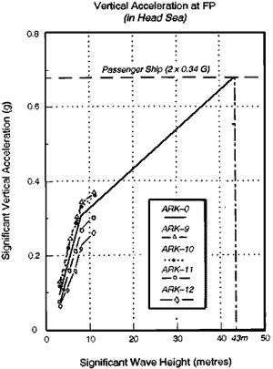 |
| Figure 5. Voyage limit based on vertical acceleration criteria. |
Similarly, from the results of roll response as shown in Figure 6, we can conclude that flooding of the Ark would not have occurred until the waves became 47.5m high, when the limiting heeling angle was 31o.
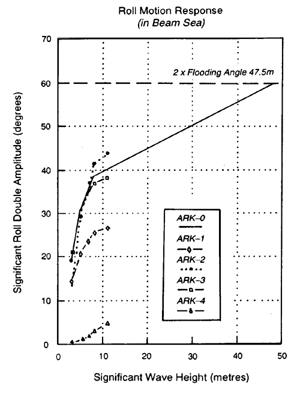 |
| Figure 6. Voyage limit based on roll limit angle. |
To calculate the voyage limit from the structure viewpoint, the required thickness of the wood was plotted for varying wave heights (see Figure 7). This showed that the Ark’s voyage limit was more than 30 metres if the thickness of the wood was 30 cm, which was quite a reasonable assumption.
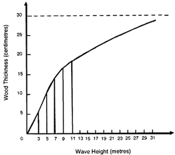 |
| Figure 7. Voyage limit based on structural safety. |
Since all the hull forms except hull #1 had sufficient overturning stability compared to ABS’s criteria, we derived the first total safety index as the average of the indices of seakeeping safety and structure safety (see Figure 8). This revealed that the Ark had the second best hull design, with the best hull design in this case being hull #1, which had the worst overturning stability.
 |
| Figure 8. Total safety index Case 1. |
When we took the weighted average including overturning stability, such as seakeeping safety 4, structural safety 4 and overturning safety 2, we derived the total safety index as shown in Figure 9. These results also showed that the Ark had superior safety compared to the other hull forms.
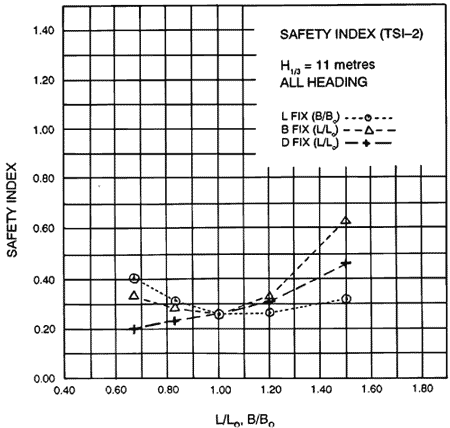 |
| Figure 9. Total safety index Case 2 |
In conclusion, the Ark as a drifting ship, is thus believed to have had a reasonable-beam-draft ratio for the safety of the hull, crew and cargo in the high winds and waves imposed on it by the Genesis Flood.
The voyage limit of the Ark, estimated from modern passenger ships' criteria reveals that it could have navigated sea conditions with waves higher than 30 metres.
This work was fully supported by the Korea Association of Creation Research.
S.W. Hong, S. S. Na, B. S. Hyun, S. Y. Hong, D. S. Gong, K. J. Kang, S. H. Suh, K. H. Lee and Y. G. Je are all on the staff of the Korea Research Institute of Ships and Engineering, Taejon. This paper was originally published in Korean and English in the Proceedings of the International Conference on Creation Research, Korea Association of Creation Research, Taejon, 1993, pp. 105–137. This English translation is published with the permission of the Korea Association of Creation Research and the authors.
-
New American Standard Bible, The Lockman Foundation, 1960.
-
Comstock, E.N. and Keane, R.G., 1980. Seakeeping by design. Naval Engineer’s Journal 92(2).
-
Hosoda, R., Kunitake, Y., H. and Nakamura, H., 1983. A method of evaluation of seakeeping performance in ship design based on mission effectiveness concept. PRADS 83, Second International Symposium, Tokyo and Seoul.
-
Bales, N.K., 1980. Optimizing the seakeeping performance of destroyer type hulls, 13th ONR.
-
Hong, S.W. et al., 1990. Safety evaluation of ships for the improvement of port control regulation. Korea Research Institute of Ships and Ocean Engineering Report, BS1783-1364D.
-
Salvesan, N., Tuck, E.O. and Faltisen, O. 1970. On the motion of ships in confused seas. Transactions of the Society of Naval Architects and Marine Engineers, 78.
-
Scott, R. B. Y., 1959. Weights and measures of the Bible. The Archaeologist, XXII(2).
-
Cummings, V. M., 1982. Has Anybody Really Seen Noah’s Ark?, Baker Book House, Grand Rapids, Michigan.
-
Morris, J. D., 1988. Noah’s Ark and the Lost World, Creation-Life Publishers, San Diego, California.
-
Salvesan, Tuck and Faltinsen, Ref. 6.
-
Ochi, M. K., 1964. Prediction of occurence and severity of ship slamming at sea. Fifth Symposium on Naval Hydrodynamics, Bergen.
Available online at:
http://www.answersingenesis.org/home/area/Magazines/tj/docs/v8n1_ArkSafety.asp
COPYRIGHT © 2003 Answers in Genesis Ministries